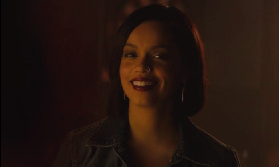
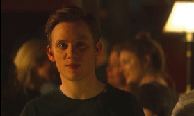

Amy
Amy es dulce , amigable , carismática , y mas atrevida que Frank. Entre todas sus parejas se ve una mujer, por lo que es bisexual.
Fisicamente es morocha de tez oscura, contextura mediana y pelo corto. Le gusta usar vestidos y el pelo recogido. Suele usar ropa azul en la mayoría de las veces.

La actriz que interpreta a Amy se llama Georgina Campbell, tiene 28 años y es de Maidstone, Inglaterra.
Frank
Frank es simpático, dulce, carismático, amable, bondadoso y algo torpe. Posee un comportamiento bastante tímido.
Físicamente es de contextura mediana, altura promedio, pelo castaño claro, de ojos claros. Suele usar ropa de color verde amarillento o azul la mayoría de las veces.

El actor que interpreta a Frank se llama Joe Cole, tiene 32 años y es de Londres, Reino Unido.